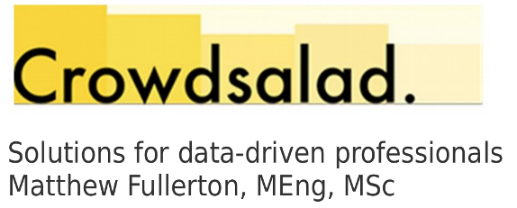

+49 176 5789 6501 | Email me | LinkedIn | GitHub | Twitter | CV (as PDF)
Crowdsalad is the trading name of Matt Fullerton, a freelance software developer and data analyst from Munich, Germany. I've been writing serious software since 2004 and have worked on projects in Germany, the USA and the UK. Technolgies I'm particularly good with are Python for data processing, Node.js for API building, jQuery and React for web projects and Cordova for mobile development. I've also worked a lot in the past with C++ and Java
My interests are in crowd sourcing of data, efficient data workflows and pipelines, open-source data platforms and community building as well mobility and travel data.
I'm a co-founder of Code for Munich, Smartlane and Hawa Dawa.